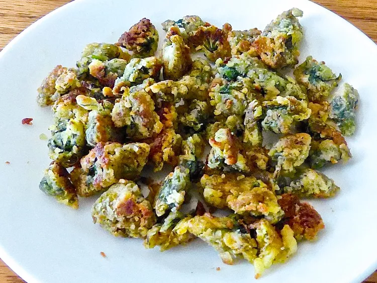

Recipes
Magnolia Snap Cookies
Like a ginger snap, but a more delicate flavor.
Fried Dandelions
Like a crispy, savory treat made from foraged dandelion flowers.
Magnolia Snap Cookies

Ingredients:
| Amount | Ingredient | Description |
|---|---|---|
| 1 cup | Granulated Sugar | |
| 1 cup | Brown Sugar | packed |
| 1.5 cups | Water | |
| 4 cups | Flour | |
| 2 cups | Butter | softened |
| 4 cups | Magnolia Petals | rinsed, petals only |
| 1 Tbsp | Vanilla Extract | |
| dash | Cinnamon | to taste |
| 1 cup | Chocolate Hazelnut Spread | optional |
Preparation Instructions:
- Add granulated sugar, water, and magnolia petals to a saucepan over medium heat.
- Bring to a boil, then reduce heat and simmer for 10 minutes.
- Remove from heat and let cool. Drain petals, reserving the liquid. You need 3/4 of a cup for the recipe, reserve any leftover.
- Preheat oven to 350°F (175°C).
- In a large bowl, cream together the butter, magnolia syrup, and brown sugar until smooth.
- Add the vanilla and cinnamon and mix well.
- Gradually blend in the flour to form a dough.
- Gently fold in the rinsed magnolia petals.
- Drop spoonfuls of dough onto ungreased cookie sheets.
- Bake for 9-12 minutes or until edges are golden brown.
- Allow cookies to cool on baking sheet for a few minutes before transferring to wire racks to cool completely.
- If desired, spread a small amount of chocolate hazelnut spread between two cookies to make sandwich cookies.
Fried Dandelions

Ingredients:
| Amount | Ingredient | Description |
|---|---|---|
| 2 cups | All-Purpose Flour | |
| 2 Tbsp | salt | seasoned is best |
| 1 Tbsp | Black Pepper | |
| 2 tsp | Paprika | |
| 2 tsp | Garlic Powder | |
| 1 tsp | Cayenne Pepper | optional |
| 4 | Large Eggs | |
| 80 | Dandelion Blossoms | unopened, stems removed, cleaned |
| 0.5 cup | Butter |
Preparation Instructions:
- Prepare the dandelion flowers ahead of time by submerging them in a bowl of room-temperature water with about 1 tablespoon salt added to the water. This rids the flowers of any insects that could be in the blossoms. Soak for about 10 minutes. Rinse the flowers in fresh water. Using a salad spinner works nicely to rinse and dry the dandelion flowers.
- In a medium bowl, whisk together the flour, salt, black pepper, paprika, garlic powder, and cayenne pepper.
- In another bowl, beat the eggs until well combined.
- Add the dandelions to the egg mixture, mix well.
- In a large skillet, melt the butter over medium heat.
- Remove half of the dandelions, allowing any excess to drip off.
- Coat the blossoms in the seasoned flour mixture, pressing gently to adhere.
- Remove and toss between your hands to allow any excess flour to fall away.
- Fry the coated dandelion blossoms for about 5 minutes in the melted butter until golden brown, stirring occasionally.
- Remove the fried dandelions and drain on paper towels to remove excess oil.
- Repeat the coating and frying process with the remaining dandelions.
- Serve warm and enjoy!